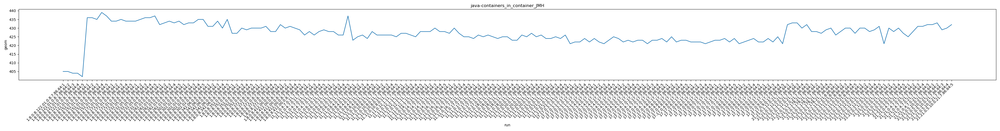
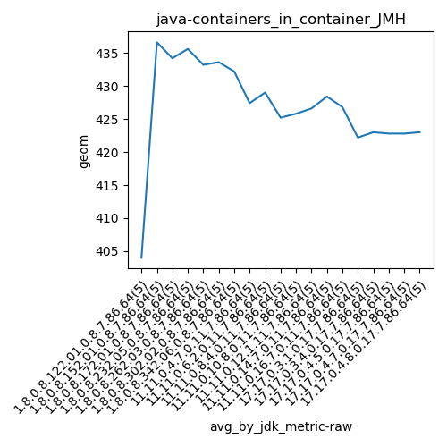
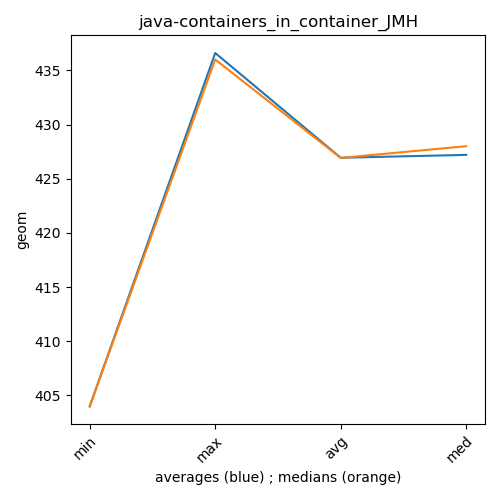

java- JMH
Context at bottom
/home/jvanek/git/benchmarks-in-nested-virtualisation-toolchain/final_results/containers_in_container_results/containers_in_container_DACAPO
java-
JMH
/home/jvanek/git/benchmarks-in-nested-virtualisation-toolchain/final_results/containers_in_container_results/containers_in_container_JMH
java-
JMH
containers_in_container_JMH
final score
Expected number of java- JDKs: 37
1st avgmed_alljdks_metric:
/home/jvanek/git/benchmarks-in-nested-virtualisation-toolchain/final_results/result_processing.py /home/jvanek/git/benchmarks-in-nested-virtualisation-toolchain/final_results/containers_in_container_results/containers_in_container_JMH geom False
values: [405, 405, 404, 404, 402, 436, 436, 435, 439, 437, 434, 434, 435, 434, 434, 434, 435, 436, 436, 437, 432, 433, 434, 433, 434, 432, 433, 433, 435, 435, 431, 431, 434, 430, 435, 427, 427, 430, 429, 430, 430, 430, 431, 428, 428, 432, 430, 431, 430, 429, 426, 428, 426, 428, 429, 428, 428, 426, 426, 437, 423, 425, 426, 424, 428, 426, 426, 426, 426, 425, 427, 427, 426, 425, 428, 428, 428, 430, 428, 428, 427, 430, 427, 425, 425, 424, 426, 425, 426, 425, 424, 425, 425, 423, 423, 426, 425, 427, 425, 426, 424, 424, 425, 424, 426, 421, 422, 422, 424, 422, 424, 422, 421, 423, 425, 424, 422, 423, 422, 423, 423, 421, 423, 423, 424, 422, 425, 422, 423, 423, 422, 422, 422, 421, 422, 423, 423, 424, 422, 424, 421, 422, 423, 424, 422, 422, 424, 422, 425, 421, 432, 433, 433, 430, 432, 428, 428, 427, 429, 430, 426, 428, 430, 430, 427, 430, 430, 428, 429, 431, 421, 430, 428, 430, 427, 425, 428, 431, 431, 432, 432, 433, 429, 430, 432]

Expected number of iterations: 5
final number of values: 185 out of 185
Pass rate: 100.0%
values: (402, 439, 426.9351351351351, 427)

** accuracy from all jdks and runs
more is better
MIN: 402
MAX: 439
AVG: 426.9351351351351
MED: 427
Relative differences 1:
MIN-MAX: 8.0 %
MIN-AVG: 6.0 %
MIN-MED: 6.0 %
MAX-MIN: -9.0 %
MAX-AVG: -3.0 %
MAX-MED: -3.0 %
AVG-MED: 0.0 %
stored to java-.properties. sort | uniq that!
2nd avgmed_by_jdk_metric:
values: [404.0, 436.6, 434.2, 435.6, 433.2, 433.6, 432.2, 428.6, 429.4, 430.4, 427.4, 429.0, 425.2, 425.8, 426.6, 428.4, 426.8, 425.2, 424.0, 425.8, 424.6, 422.2, 423.0, 422.8, 422.8, 423.0, 421.8, 423.2, 422.4, 422.8, 432.0, 428.4, 428.2, 429.6, 427.2, 429.4, 431.2]

values: [404, 436, 434, 436, 433, 433, 431, 429, 430, 430, 428, 428, 425, 426, 427, 428, 427, 425, 424, 426, 424, 422, 423, 423, 423, 423, 422, 423, 422, 422, 432, 428, 428, 430, 428, 431, 432]

values: (404.0, 436.6, 426.93513513513517, 427.2)
values: (404, 436, 426.9189189189189, 428)

** accuracy from all jdks where runs were avged
more is better
MIN: 404.0
MAX: 436.6
AVG: 426.93513513513517
MED: 427.2
Relative differences 1:
MIN-MAX: 7.0 %
MIN-AVG: 5.0 %
MIN-MED: 5.0 %
MAX-MIN: -8.0 %
MAX-AVG: -2.0 %
MAX-MED: -2.0 %
AVG-MED: 0.0 %
stored to java-.properties. sort | uniq that!
** accuracy from all jdks where runs were medianed
more is better
MIN: 404
MAX: 436
AVG: 426.9189189189189
MED: 428
Relative differences 1:
MIN-MAX: 7.0 %
MIN-AVG: 5.0 %
MIN-MED: 6.0 %
MAX-MIN: -8.0 %
MAX-AVG: -2.0 %
MAX-MED: -2.0 %
AVG-MED: 0.0 %
stored to java-.properties. sort | uniq that!
/home/jvanek/git/benchmarks-in-nested-virtualisation-toolchain/final_results/containers_in_container_results/containers_in_container_SPECJBB
java-
JMH
/home/jvanek/git/benchmarks-in-nested-virtualisation-toolchain/final_results/containers_in_container_results/containers_in_container_RADARGUNs1
java-
JMH
/home/jvanek/git/benchmarks-in-nested-virtualisation-toolchain/final_results/containers_in_container_results/containers_in_container_J2DBENCH
java-
JMH
/home/jvanek/git/benchmarks-in-nested-virtualisation-toolchain/final_results/containers_in_container_results/containers_in_container_RADARGUNs3
java-
JMH
pass rates:
containers_in_container_JMH=100.0%
Context:
- containers_in_container_results
- JMH